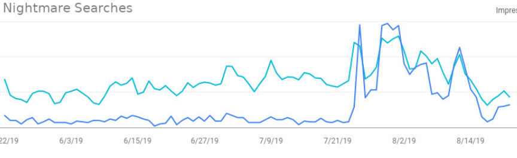
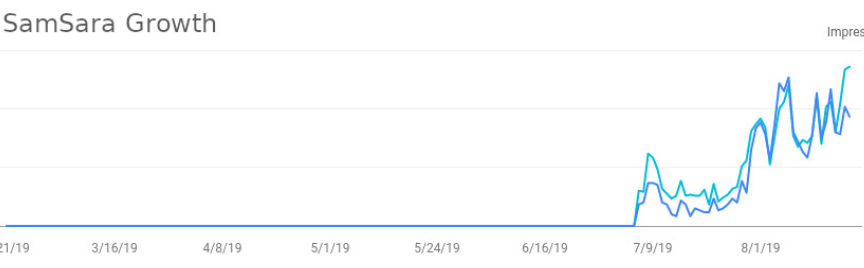
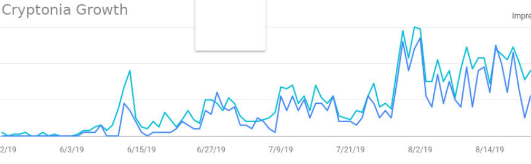
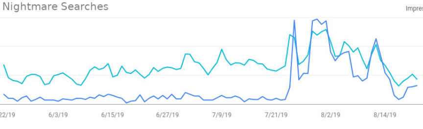
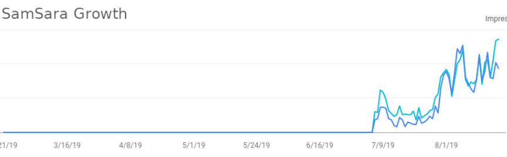
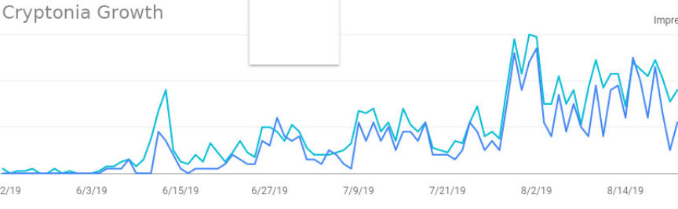

Here are the Top Markets Based on Search Results
~9 min read | Published on 2019-08-23, tagged Darkweb-Market, General-News using 2127 words.
Although many readers–perhaps the majority of them–visit this site directly, some of them find the site through search engines. A staggering number of users find Darknetlive through relevant Google searches. The searches reveal interesting patterns in the behavior of darkweb users. For instance, even though Nightmare Market exit scammed a month ago, there are more searches for the market than for any other market within the last 28 days.
Introduction
As many of you know, I never aimed to be a DeepDotWeb replacement; I started this site as a personal project long before federal authorities seized DeepDotWeb. I have not promoted the site by spreading links to articles anywhere but the Darknetlive subdread and Darknetlive Twitter account. And even then, updates are infrequent and the accounts are primarily ignored. I have not cared about search engine optimization or SERP (and as a result, some of the Darknetlive phishing proxies temporarily ranked as high as Darknetlive itself). After the DeepDotWeb takedown though, this site started organically replacing DeepDotWeb in Google’s search results for relevant terms.
DeepDotWeb published their own rankings based on search terms. They had Google Analytics enabled though, allowing a much more in-depth tracking of users and clicks. All I know is the term searched in Google that resulted in traffic to my site. Although the top lists published by DeepDotWeb were interesting, I prefer the raw data. Since the actual raw data would be an absolute mess to publish in a blog post, I will publish condensed versions of the search terms instead of the full lists. The top 1,000 terms will be attached in a .txt file though. Removed from the lists in this post are terms clearly used in an attempt to reach Darknetlive.To Octoberdream marketsamsara marketdarknet livedream market replacementdnm bibleberlusconi marketcryptoniasilk road 3.1genesis marketoxygodnew dream marketsilkroad 3.1nightmare market7tllqrhac6nugoolcryptonia marketdread websiteempire market urlcgmcdarkmarketempire marketdark net livepharma masterdream alt marketsilk road 3.1 downempire market linkdread forumdreammarketdream market 2019silk road 3.1 linkny4a6zwwmrvyjtluglobal dreamsdarknet forumzvz4ruc5b5q5yqzsdarknet forumsdarknet market listdarknet bible3rmybxbtkb5txmqvsilkroad 3.1 downwyatt paseksamsara market urlpharma-mastersilk road 3.1 urldnm buyer bibleglobal dreams darknetdream market urllunamarmge6dadagdark web markets 2019empforumgfttfqnqgenesis market link
Top Markets/Forums (October)
To September
Top 50 Terms
dream marketdarknetlivesamsara marketnightmare marketdarknet livedream market replacementcryptonianew dream marketoxygoddnm biblecryptonia marketgenesis marketberlusconi marketsilk road 3.1empire market urlempire market linkcgmc7tllqrhac6nugoolnightmare market urldream alt marketnightmare market exit scamsilkroad 3.1zvz4ruc5b5q5yqzsempire marketdread forumdark net livedarkmarketglobal dreamsdarknet market listjesus of rave3rmybxbtkb5txmqvgladymanwyatt pasekdarknet forumdream market 2019darknet forumsempire market linksnightmare market linkdark web markets june 2019dnm buyer biblecannazonberlusconi market linklunamarmge6dadagsilk road 3.1 linkcannazon linkgenesis market dark websilk road 3.1 downempforumgfttfqnqempire market downnightmare exit scamSorted by active markets/forums
Top Pages
The list of top pages exclusively for darkweb marketplaces and (forums, blog posts, or indexes). the homepage, the market list, and two articles are the only pages outranking SamSara Market.August 20
I suspect the only reason Empire Market isn’t on this list is because 1. Empire explicitly tells users to only obtain links from Dark.fail
and 2. Everyone has bookmarked Empire Market’s primary address. I think it is fairly obvious why Silk Road 3.1 is present.Through mid August
Top 50 Terms
Over Six Months
Top 1,000 Terms Listnightmare marketempire market linkempire market urldream marketcgmcsamsara marketdream market replacementberlusconi marketnightmare market urlempire marketempire market linksdread forumcryptoniadnm buyer bibledread onionagartha marketcryptonia marketempire market mirrorsdream alt marketcgmc downcgmc marketdarknet market listnightmare market linkempire market downzvz4ruc5b5q5yqzsempire market onionyellow brick marketnew dream marketnightmare market exit scamdarknet forumdnm avengersspeedstepperdarknet forum listcannazon linkdread darknettochka marketdarknet forumsempire market mirror linksdnm buyers biblednm bibleberlusconi market url7tllqrhac6nugoolnightmare market downgenesis marketdarknet buyers bible3rmybxbtkb5txmqvdread onion linklunamarmge6dadaggladymanempire market mirrorOver Three Months
Top 1,000 Termsnightmare marketempire market linkdream marketempire market urlsamsara marketcgmcdream market replacementempire marketcryptoniaempire market linksnightmare market urlcryptonia marketberlusconi marketdream alt marketzvz4ruc5b5q5yqzsdread forumempire market mirrorsempire market downnew dream marketnightmare market exit scamdnm buyer bibledarknet market listcgmc marketcgmc downempire market oniondarknet forumcannazon linkagartha marketnightmare market link7tllqrhac6nugooldnm avengersdnm biblegenesis marketyellow brick marketnightmare market downdarknet forums3rmybxbtkb5txmqvempire market mirror linkslunamarmge6dadaggladymandark web markets june 2019darknet forum listdread onionjesus of raveempire market alternative linkssilk road 3.1nightmare exit scamhugh brian haneynightmare market scamempforumgfttfqnqOver One Month
Top 1,000 Termsnightmare marketdream marketsamsara marketdream market replacementcryptonianightmare market exit scamempire market linknew dream marketcryptonia marketempire market urlcgmcberlusconi marketnightmare market urlgladymandnm biblenightmare exit scamdream alt marketgenesis marketnightmare market down7tllqrhac6nugoolnightmare market scamdark web markets june 2019dread forumzvz4ruc5b5q5yqzsnightmare market maintenancejesus of ravesilk road 3.1empire marketdarknet market listempire market downdarknet forumsamsara marketplacesamsara market darknetdnm buyer biblenightmare market linklunamarmge6dadag3rmybxbtkb5txmqvdarknet forumsempire market linkssilkroad 3.1global dreamsdarkmarketempforumgfttfqnqdark web markets 2019berlusconi market linkcannazonnightmare market under maintenancecgmc marketgenesis market dark webdnm avengersOver Seven Days
Top 1,000 Terms Listsamsara marketdream marketnightmare marketdream market replacementcryptoniacryptonia marketberlusconi marketdnm bibleempire market urlempire market linkgenesis marketnew dream market7tllqrhac6nugoolcgmcdream alt marketnightmare market exit scamempire marketzvz4ruc5b5q5yqzsdread forumnightmare market urlglobal dreamssilk road 3.1dark web markets june 2019berlusconi market down3rmybxbtkb5txmqvdarknet forumsgladymancannazonempire market linksdarkmarketsilkroad 3.1berlusconi market linkdarknet market listsamsara urlgenesis market dark webdarknet forumcannazon linkdnm bible pdflunamarmge6dadagdarknet markets 2019empforumgfttfqnqdream market new siteyellow brick marketjesus of raveagartha marketdream market 2019berlusconi market urldarknet biblenightmare urlempire market onion
Insights
Markets
Looking at the past seven days, the top markets based on incoming search terms (without considering the links clicked or ruling out dead markets) would be:
SamSara Market Dream Market Cryptonia Market Berlusconi Market Empire Market Genesis Market CGMC Dream Alt Nightmare Market Silk Road 3.1 Cannazon Yellow Brick Market Agartha Market
But a better list pulls terms from a three month period and excludes dead marketplaces. We can safely assume that Empire is more popular than markets like Cryptonia and Berlusconi. And not every market search results in a click for that market’s page or even an article with a link to the market. Some look for market news, updates, etc. With that in mind, the following list is more accurate based on the strings searched by this site’s visitors. In addition, only the top four searches can be safely chosen. The fifth would be a tie between several smaller markets. I am not able to figure out if Genesis Market is simply having a temporary spike in traffic or if it is becoming more popular than Silk Road 3.1. It is also worth clarifying that this is by no means an indicator of the best or most popular market overall. Many people use Dark.fail for market links. Others have links to their markets bookmarked. The majority of people searching for market links are likely doing so over Tor and likely using DuckDuckGo instead of Google. A top four list based on incoming search terms:
Empire Market SamSara Market Cryptonia Market Berlusconi Market
Even though Nightmare Market exit scammed one month ago, searches for the marketplace still result in more visitors from Google searches than for other search terms. “Nightmare Exit Scam” showed up but has since dropped to Darknetlive’s 112th most searched term on Google. A search for “empire market exit scam” somehow comes in at number 89 (as of this article). Yet Empire Market is not exit scamming.
People have consistently been searching for a Dream Market replacement following the Dream Market shutdown. This perhaps explains Dream Alt’s appearance in the top 20 terms in the one month list and in the seven days list. It should be of no surprise that SamSara Market ranks as high as it does in all of the above lists. And the market has done nothing but climb since launch. Dread posts paint the market in such a negative light people have ignored the market’s overwhelmingly successful launch.
Cryptonia searches have increased significantly as well. The increased use of Cryptonia is immediately noticeable on Dread as well where posts about order or vendors on the Cryptonia subdread have become much more common than when Nightmare Market still functioned.
Empire Market has essentially remained in the same spot. People have searched for and clicked on links for Empire Market mirrors and links. Much of this is due to the downtime1 Empire Market experienced during the most recent wave of DOS attacks. The number of people searching for SamSara-related posts is still lower than the Empire number. However the people searching for SamSara links are clicking on and reading articles about SamSara instead of trying to find working mirrors.
For the majority of marketplace searches, users click the link for the Darknetlive marketplace list. Almost all of the “-url” or “-link” searches result in marketplace list clicks. But searches for the markets without the link or url suffix generally end in clicks to news articles about the markets in question. An exception to this rule is the SamSara clicks over a six month period. Very few people have actually clicked on the SamSara page or the marketplace list.
The search terms for various marketplaces rarely match the searched market’s about page as far as clicks are concerned. More people, for instance, have visited the Genesis Market page than the Berlusconi page even though Berlusconi ranks in the top ten and Genesis only recently started ranking in the top 20. (This week Genesis actually made it t number 11 with an impressive number of searches for a relatively new market.)Vendors
There is no doubt that the marketplace news and darknet market list are the primary attractions to this site to users via Google Search. The list of markets and list of forums are some of the most plagiarized pages on Darknetlive. The only non-market competitor would be the list of arrested darkweb vendors. It has been copied by most darkweb news sites and is one of the pages on Darknetlive that receives a lot of community input.
Removing all the search terms for Darknetlive specifically as well as for marketplace terms, these are the top 50 most common searches that bring users to the arrested vendor list within the last three months.darknet vendorsmr taffy vendorheineken express vendorheinekenexpressraisedbydiablowheinekenexpress vendordarknet vendor arresteddiamonddwellerdarknet vendorjason weld hagenfbi ncideadderallzfernando padilla becerraxanaxmanadderallz vendordarknet arrests 2019anthony dai trandark net vendorswyatt pasekxanax uk wickrchester anderson south brunswick njchems_usadrug vendorsvendor arresteddarknet arrestsxanaxkingdarknet arresthollandonline drugsdiablowdavid ryan burchardjeremy donagalmed3l1nisaiah suarezaka vendorsdarkweb vendorsis dream arrestedalphabay arrestheineken mdmafarmacy41mdma heinekenkurt lai lantrapgodalaa mohammed allawidream arrestedsilk road pikesvilledream vendorhenry koffiejames ellingson silk roadoxygodchukwuemeka okparaeke
The “is Dream arrested” query was my favorite. Unsurprisingly the Adderallz bust and the Northern California Illicit Digital Economy Task Force (NCIDETF) cases brought a significant amount of traffic. Both have continued to do so within the last month and last week. Both the article about the Adderallz bust and the article about the NCIDETF onion service are among the top ranking news posts on this site.
Specific news articles about vendor busts vary widely in popularity. This is in part due to our ability to cover the bust in a timely fashion. Some noticeable patterns are still present though. One is that articles about more popular vendors are favored over articles about smaller vendors. That one should be obvious. But the articles about larger vendors win even if the smaller bust is a better article, more in-depth, or more interesting. People seem to favor articles about ecstasy vendors and Xanax vendors. Those articles are also shared more than any other articles on the site.
Vendor busts are not attractive only to the vendors region. NSWgreat is a good example of international interest in a regional darkweb vendor. Although Australian visitors had the most clicks and the most impressions for NSWgreat, visitors from the United States clicked the NSWgreat article a very similar number of times. Other regions with a less significant representation in Search Console had similar interest in the NSWgreat articles.Region
There are more readers visiting the site (via Google Search) with U.S. IP addresses than visitors from any other region. However the number of visitors from the U.K. on average matches the number of visitors from Germany and Australia. Italy, Canada, and Austria all line up similarly. As do visitors from the Netherlands; Switzerland; Denmark; Ireland; Sweden; India; Spain; Poland.
Someone could possibly put together data that compiled population, language barrier, and Google’s own regional targeting. I suspect they would need more data than I could provide though.
That is all for now. Darknetlive is the top query and the homepage is the top page. Please keep in mind that this information is available to me just as it is available to Google. No additional tracking programs were used to put this together. No analytics programs exist on this site. Server logs are not kept on the onion service unless there is a specific reason to investigate them. The server logs for the clearnet site are similarly wiped except when I move the site somewhere for DOS protection (I temporarily lose control of access to all of the logs). Once back to one of my own servers, all logs under my control are wiped on a regular basis.
Empire’s downtime is a reference to the downtime of their primary mirrors; I am not sure if the market has ever completely dropped offline. ↩︎
Introduction
As many of you know, I never aimed to be a DeepDotWeb replacement; I started this site as a personal project long before federal authorities seized DeepDotWeb. I have not promoted the site by spreading links to articles anywhere but the Darknetlive subdread and Darknetlive Twitter account. And even then, updates are infrequent and the accounts are primarily ignored. I have not cared about search engine optimization or SERP (and as a result, some of the Darknetlive phishing proxies temporarily ranked as high as Darknetlive itself). After the DeepDotWeb takedown though, this site started organically replacing DeepDotWeb in Google’s search results for relevant terms.
DeepDotWeb published their own rankings based on search terms. They had Google Analytics enabled though, allowing a much more in-depth tracking of users and clicks. All I know is the term searched in Google that resulted in traffic to my site. Although the top lists published by DeepDotWeb were interesting, I prefer the raw data. Since the actual raw data would be an absolute mess to publish in a blog post, I will publish condensed versions of the search terms instead of the full lists. The top 1,000 terms will be attached in a .txt file though. Removed from the lists in this post are terms clearly used in an attempt to reach Darknetlive.To Octoberdream marketsamsara marketdarknet livedream market replacementdnm bibleberlusconi marketcryptoniasilk road 3.1genesis marketoxygodnew dream marketsilkroad 3.1nightmare market7tllqrhac6nugoolcryptonia marketdread websiteempire market urlcgmcdarkmarketempire marketdark net livepharma masterdream alt marketsilk road 3.1 downempire market linkdread forumdreammarketdream market 2019silk road 3.1 linkny4a6zwwmrvyjtluglobal dreamsdarknet forumzvz4ruc5b5q5yqzsdarknet forumsdarknet market listdarknet bible3rmybxbtkb5txmqvsilkroad 3.1 downwyatt paseksamsara market urlpharma-mastersilk road 3.1 urldnm buyer bibleglobal dreams darknetdream market urllunamarmge6dadagdark web markets 2019empforumgfttfqnqgenesis market link
Top Markets/Forums (October)
| Markets | Forums |
|---|---|
| Samsara Market | Dread |
| Berlusconi | Empire Forum |
| Cryptonia | DNM Avengers |
| Cryptonia | |
| Silk Road | |
| Empire |
Top 50 Terms
dream marketdarknetlivesamsara marketnightmare marketdarknet livedream market replacementcryptonianew dream marketoxygoddnm biblecryptonia marketgenesis marketberlusconi marketsilk road 3.1empire market urlempire market linkcgmc7tllqrhac6nugoolnightmare market urldream alt marketnightmare market exit scamsilkroad 3.1zvz4ruc5b5q5yqzsempire marketdread forumdark net livedarkmarketglobal dreamsdarknet market listjesus of rave3rmybxbtkb5txmqvgladymanwyatt pasekdarknet forumdream market 2019darknet forumsempire market linksnightmare market linkdark web markets june 2019dnm buyer biblecannazonberlusconi market linklunamarmge6dadagsilk road 3.1 linkcannazon linkgenesis market dark websilk road 3.1 downempforumgfttfqnqempire market downnightmare exit scamSorted by active markets/forums
| Top Markets | Top Forums |
|---|---|
| SamSara Market | Dread |
| Cryptonia Market | |
| Genesis Market | |
| Berlusconi Market | |
| Silk Road 3.1 | |
| Dream Alt | |
| Empire Market | |
| DarkMarket | |
| Cannazon |
Top Pages
The list of top pages exclusively for darkweb marketplaces and (forums, blog posts, or indexes). the homepage, the market list, and two articles are the only pages outranking SamSara Market.August 20
| Top Markets | Top Forums |
|---|---|
| SamSara Market | Dread |
| Silk Road 3.1 | The Hub |
| Cryptonia Market | DNStars |
| Dream Alt | DN Avengers |
| Genesis Market |
I suspect the only reason Empire Market isn’t on this list is because 1. Empire explicitly tells users to only obtain links from Dark.fail
and 2. Everyone has bookmarked Empire Market’s primary address. I think it is fairly obvious why Silk Road 3.1 is present.Through mid August
Top 50 Terms
Over Six Months
Top 1,000 Terms Listnightmare marketempire market linkempire market urldream marketcgmcsamsara marketdream market replacementberlusconi marketnightmare market urlempire marketempire market linksdread forumcryptoniadnm buyer bibledread onionagartha marketcryptonia marketempire market mirrorsdream alt marketcgmc downcgmc marketdarknet market listnightmare market linkempire market downzvz4ruc5b5q5yqzsempire market onionyellow brick marketnew dream marketnightmare market exit scamdarknet forumdnm avengersspeedstepperdarknet forum listcannazon linkdread darknettochka marketdarknet forumsempire market mirror linksdnm buyers biblednm bibleberlusconi market url7tllqrhac6nugoolnightmare market downgenesis marketdarknet buyers bible3rmybxbtkb5txmqvdread onion linklunamarmge6dadaggladymanempire market mirrorOver Three Months
Top 1,000 Termsnightmare marketempire market linkdream marketempire market urlsamsara marketcgmcdream market replacementempire marketcryptoniaempire market linksnightmare market urlcryptonia marketberlusconi marketdream alt marketzvz4ruc5b5q5yqzsdread forumempire market mirrorsempire market downnew dream marketnightmare market exit scamdnm buyer bibledarknet market listcgmc marketcgmc downempire market oniondarknet forumcannazon linkagartha marketnightmare market link7tllqrhac6nugooldnm avengersdnm biblegenesis marketyellow brick marketnightmare market downdarknet forums3rmybxbtkb5txmqvempire market mirror linkslunamarmge6dadaggladymandark web markets june 2019darknet forum listdread onionjesus of raveempire market alternative linkssilk road 3.1nightmare exit scamhugh brian haneynightmare market scamempforumgfttfqnqOver One Month
Top 1,000 Termsnightmare marketdream marketsamsara marketdream market replacementcryptonianightmare market exit scamempire market linknew dream marketcryptonia marketempire market urlcgmcberlusconi marketnightmare market urlgladymandnm biblenightmare exit scamdream alt marketgenesis marketnightmare market down7tllqrhac6nugoolnightmare market scamdark web markets june 2019dread forumzvz4ruc5b5q5yqzsnightmare market maintenancejesus of ravesilk road 3.1empire marketdarknet market listempire market downdarknet forumsamsara marketplacesamsara market darknetdnm buyer biblenightmare market linklunamarmge6dadag3rmybxbtkb5txmqvdarknet forumsempire market linkssilkroad 3.1global dreamsdarkmarketempforumgfttfqnqdark web markets 2019berlusconi market linkcannazonnightmare market under maintenancecgmc marketgenesis market dark webdnm avengersOver Seven Days
Top 1,000 Terms Listsamsara marketdream marketnightmare marketdream market replacementcryptoniacryptonia marketberlusconi marketdnm bibleempire market urlempire market linkgenesis marketnew dream market7tllqrhac6nugoolcgmcdream alt marketnightmare market exit scamempire marketzvz4ruc5b5q5yqzsdread forumnightmare market urlglobal dreamssilk road 3.1dark web markets june 2019berlusconi market down3rmybxbtkb5txmqvdarknet forumsgladymancannazonempire market linksdarkmarketsilkroad 3.1berlusconi market linkdarknet market listsamsara urlgenesis market dark webdarknet forumcannazon linkdnm bible pdflunamarmge6dadagdarknet markets 2019empforumgfttfqnqdream market new siteyellow brick marketjesus of raveagartha marketdream market 2019berlusconi market urldarknet biblenightmare urlempire market onion
Insights
Markets
Looking at the past seven days, the top markets based on incoming search terms (without considering the links clicked or ruling out dead markets) would be:
But a better list pulls terms from a three month period and excludes dead marketplaces. We can safely assume that Empire is more popular than markets like Cryptonia and Berlusconi. And not every market search results in a click for that market’s page or even an article with a link to the market. Some look for market news, updates, etc. With that in mind, the following list is more accurate based on the strings searched by this site’s visitors. In addition, only the top four searches can be safely chosen. The fifth would be a tie between several smaller markets. I am not able to figure out if Genesis Market is simply having a temporary spike in traffic or if it is becoming more popular than Silk Road 3.1. It is also worth clarifying that this is by no means an indicator of the best or most popular market overall. Many people use Dark.fail for market links. Others have links to their markets bookmarked. The majority of people searching for market links are likely doing so over Tor and likely using DuckDuckGo instead of Google. A top four list based on incoming search terms:
Even though Nightmare Market exit scammed one month ago, searches for the marketplace still result in more visitors from Google searches than for other search terms. “Nightmare Exit Scam” showed up but has since dropped to Darknetlive’s 112th most searched term on Google. A search for “empire market exit scam” somehow comes in at number 89 (as of this article). Yet Empire Market is not exit scamming.
The Rise and Fall of Searches for Nightmare Market
People have consistently been searching for a Dream Market replacement following the Dream Market shutdown. This perhaps explains Dream Alt’s appearance in the top 20 terms in the one month list and in the seven days list. It should be of no surprise that SamSara Market ranks as high as it does in all of the above lists. And the market has done nothing but climb since launch. Dread posts paint the market in such a negative light people have ignored the market’s overwhelmingly successful launch.
The Increase in Searches for Samsara Market
Cryptonia searches have increased significantly as well. The increased use of Cryptonia is immediately noticeable on Dread as well where posts about order or vendors on the Cryptonia subdread have become much more common than when Nightmare Market still functioned.
An Increase in Searches for Cryptonia Market
Empire Market has essentially remained in the same spot. People have searched for and clicked on links for Empire Market mirrors and links. Much of this is due to the downtime1 Empire Market experienced during the most recent wave of DOS attacks. The number of people searching for SamSara-related posts is still lower than the Empire number. However the people searching for SamSara links are clicking on and reading articles about SamSara instead of trying to find working mirrors.
For the majority of marketplace searches, users click the link for the Darknetlive marketplace list. Almost all of the “-url” or “-link” searches result in marketplace list clicks. But searches for the markets without the link or url suffix generally end in clicks to news articles about the markets in question. An exception to this rule is the SamSara clicks over a six month period. Very few people have actually clicked on the SamSara page or the marketplace list.
The search terms for various marketplaces rarely match the searched market’s about page as far as clicks are concerned. More people, for instance, have visited the Genesis Market page than the Berlusconi page even though Berlusconi ranks in the top ten and Genesis only recently started ranking in the top 20. (This week Genesis actually made it t number 11 with an impressive number of searches for a relatively new market.)Vendors
There is no doubt that the marketplace news and darknet market list are the primary attractions to this site to users via Google Search. The list of markets and list of forums are some of the most plagiarized pages on Darknetlive. The only non-market competitor would be the list of arrested darkweb vendors. It has been copied by most darkweb news sites and is one of the pages on Darknetlive that receives a lot of community input.
Removing all the search terms for Darknetlive specifically as well as for marketplace terms, these are the top 50 most common searches that bring users to the arrested vendor list within the last three months.darknet vendorsmr taffy vendorheineken express vendorheinekenexpressraisedbydiablowheinekenexpress vendordarknet vendor arresteddiamonddwellerdarknet vendorjason weld hagenfbi ncideadderallzfernando padilla becerraxanaxmanadderallz vendordarknet arrests 2019anthony dai trandark net vendorswyatt pasekxanax uk wickrchester anderson south brunswick njchems_usadrug vendorsvendor arresteddarknet arrestsxanaxkingdarknet arresthollandonline drugsdiablowdavid ryan burchardjeremy donagalmed3l1nisaiah suarezaka vendorsdarkweb vendorsis dream arrestedalphabay arrestheineken mdmafarmacy41mdma heinekenkurt lai lantrapgodalaa mohammed allawidream arrestedsilk road pikesvilledream vendorhenry koffiejames ellingson silk roadoxygodchukwuemeka okparaeke
The “is Dream arrested” query was my favorite. Unsurprisingly the Adderallz bust and the Northern California Illicit Digital Economy Task Force (NCIDETF) cases brought a significant amount of traffic. Both have continued to do so within the last month and last week. Both the article about the Adderallz bust and the article about the NCIDETF onion service are among the top ranking news posts on this site.
Specific news articles about vendor busts vary widely in popularity. This is in part due to our ability to cover the bust in a timely fashion. Some noticeable patterns are still present though. One is that articles about more popular vendors are favored over articles about smaller vendors. That one should be obvious. But the articles about larger vendors win even if the smaller bust is a better article, more in-depth, or more interesting. People seem to favor articles about ecstasy vendors and Xanax vendors. Those articles are also shared more than any other articles on the site.
Vendor busts are not attractive only to the vendors region. NSWgreat is a good example of international interest in a regional darkweb vendor. Although Australian visitors had the most clicks and the most impressions for NSWgreat, visitors from the United States clicked the NSWgreat article a very similar number of times. Other regions with a less significant representation in Search Console had similar interest in the NSWgreat articles.Region
There are more readers visiting the site (via Google Search) with U.S. IP addresses than visitors from any other region. However the number of visitors from the U.K. on average matches the number of visitors from Germany and Australia. Italy, Canada, and Austria all line up similarly. As do visitors from the Netherlands; Switzerland; Denmark; Ireland; Sweden; India; Spain; Poland.
Someone could possibly put together data that compiled population, language barrier, and Google’s own regional targeting. I suspect they would need more data than I could provide though.
That is all for now. Darknetlive is the top query and the homepage is the top page. Please keep in mind that this information is available to me just as it is available to Google. No additional tracking programs were used to put this together. No analytics programs exist on this site. Server logs are not kept on the onion service unless there is a specific reason to investigate them. The server logs for the clearnet site are similarly wiped except when I move the site somewhere for DOS protection (I temporarily lose control of access to all of the logs). Once back to one of my own servers, all logs under my control are wiped on a regular basis.
Empire’s downtime is a reference to the downtime of their primary mirrors; I am not sure if the market has ever completely dropped offline. ↩︎